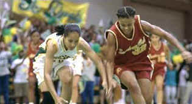

| Love
and Basketball (SE)/A-,A |
| New Line/2000/127/ANA 1.85 |
ISF
Reference DVD Selection
A
charming love story framed around boy and girl neighbors who grow up with basketballs bouncing in
their dreams. Unusual concept and fine execution. Good coaching, oops-- direction.
When eleven-year-old Monica Wright moves next door to young Quincy McCall, the
kids find immediate conflict and attraction. Wright can shoots hoops with the best of the boys and
McCall, whose Dad is a NBA player, has all the moves of a future star. Love and Basketball takes
the two through adolescence to high school, college and even the pro ranks, all the while mingling
hoops and heart with equal panache. Family relationships are explored with unusual honesty, sex is treated with sweet delicacy and fresh frankness, and the universe which
these two stars inhabit is created grand insight.
 |
| Giving it all. ©New Line |
Gina Prince-Blythwood makes first team all director
with Love and Basketball. She knows this turf so well and shares the complexity of her feelings.
The pace is beautifully modulated. Price-Blythewood paces her film like an athlete saving something
for the end. Perhaps a less reserve and some swifter ball handling would have made Love and
Basketball even more incisive. The director's team delivers the goods in a first class package. The
bright, contemporary cinematography by Reynaldo VillaLobos matches the energy of the director's
script. Terrence Blanchard's score more the basketball down the court is sweet rhythms.
The director shows a sure hand in coaxing wonderful performances from her
leads.Sanaa Lathan is a wonderful presence in Love and Basketball. Everything revolves
around her strong personality. This girl can command the court. Lathan makes Monica Wright a fully
realized human being, working out her feelings on the basketball court, in the kitchen with her
mother, or in intimate situations with Omar Epps. As Quincy McCall, Epps is good, but scores fewer
emotional baskets. Perhaps his character is less fully explored by the screenplay. The characters
both get lots of "Playing" time, but Lathan gets the bulk of the minutes.
Prince-Blythewood works magic with the supporting actors as well. Perhaps it's
the excellent casting. Dennis Haysbert, looking every inch the professional basketball player,
plays the senior McCall with great dignity. Alfre Woodward provides parental conflict as Monica's
homemaker Mom with her usual screen strength.
The audio commentary featuring Gina Prince-Bythewood and
Sanaa Lathan is consistently charming. Director and star are having a good time. A lot of the time
commentary is not scene specific, but a conversation between the two ladies. The blooper reel is
not especially entertaining. There's an isolated score commentary featuring composer Terrence
Blanchard, editor Terilyn A. Shropshire and Prince-Blythewood. The loaded special edition includes
deleted scenes, audition tapes, and animated story boards. Finally, there's an original documentary
Breaking the Glass Ceiling: The Rise and Acceptance of Women Competitors. This consists
mostly of successful women talking about the perseverance necessary for a woman to succeed. It's
intercut with some scenes fromt he movie to make it more palatable.
Love and Basketball is a winning DVD from the opening tip-off. These are
just about the sharpest images I recall seeing on DVD with no edge ringing. Depth of image is
simply amazing. The contrast and brightness levels are eye-popping: snap,
crackle and a perfect jump shot every time. Colors are deeply saturated with no bleeding. Perfect edges all the way. The
Dolby Digital Surround is active with bass thumping rhythms passionately delivered.
|
|
|
|

Selections from the feature archive include articles on Akira Kurosawa,
Frank Darabont, Blonde Bimbos, Hollywood
Street Gangs, or Vietnam:
The Hollywood Pariah, and many more....
Sturges Emerges
Preston Sturges was Hollywood's resident comic genius for more than a decade. His movies are
timeless. Click on his image to read all about it.

 Gary Morris's insightful
publication Bright Lights Film Journal turns the celluloid in films from a unique
perspective. Click on the image above for more pure movie views. Gary Morris's insightful
publication Bright Lights Film Journal turns the celluloid in films from a unique
perspective. Click on the image above for more pure movie views.

Click on the link to visit the judge's chambers.
Imaging Science Foundation
The Imaging Science Foundation promotes proper standards in home theater viewing. ISF trained
technicians offer monitor calibration services to consumers. The difference in a properly
calibrated monitor can be astounding. Click on the image to find an ISF member near you.

Information on film sound in theaters and home theaters. Lots of helpful information provided in a
handsome interface.

The Movie Poster
Archive includes extensive poster images from the films of stars like Susan Hayward, Kirk Douglas,
Katharine Hepburn and many more. Our
featured star is Kirk Douglas. |